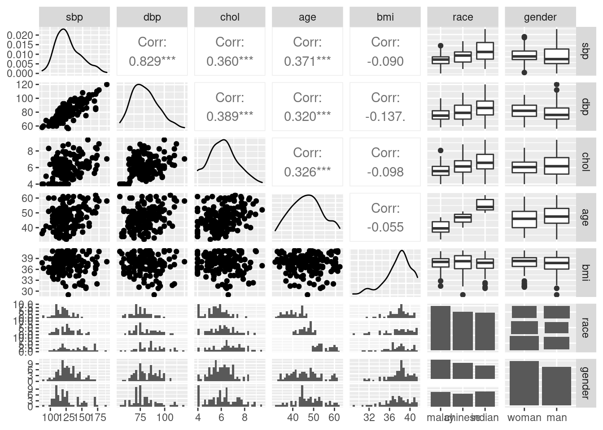
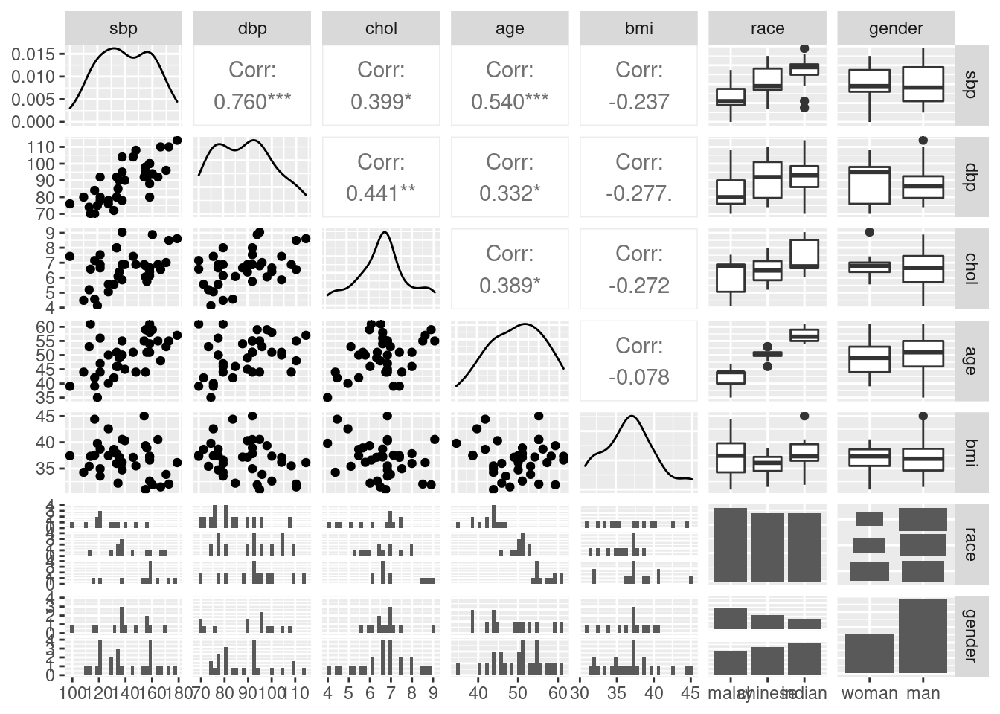
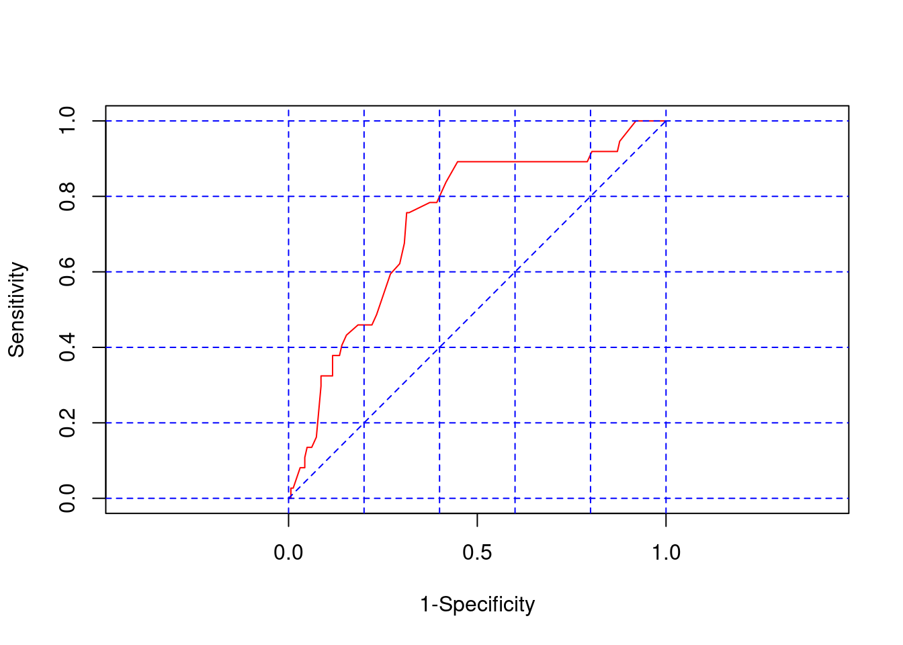

Chapter 2 Logistic Regression
2.1 Introduction
Statistical method to model relationship between:
- outcome: binary categorical variable.
- predictors/independent variables: numerical, categorical variables.
A type of Generalized Linear Models (GLMs).
Basically, the relationship is structured as follows,
\[binary\ outcome = numerical\ predictors + categorical\ predictors\]
more accurately, the logistic relationship structure,
\[log_e\bigg({proportion \over 1 - proportion}\bigg) = numerical\ predictors + categorical\ predictors\] We turned the binary outcome into proportion (\(p\)) of having the outcome. \(log_e\) is the natural log, sometimes written as ln.
The part, \(\frac{p}{1-p}\) is known as odds.
2.2 Odds ratio vs relative risk
Association analysis for cross-tabulation of a binary factor and its outcome can be expressed as odds ratio.
- Odds is a measure of chance of disease occurence in a specified group, \[Odds = \frac{n_{disease}}{n_{no\ disease}}\]
- Odds ratio, OR is the ratio between the odds of two groups; the group with the risk factor and the group without the risk factor, \[Odds\ ratio, OR = \frac{Odds_{factor}}{Odds_{no\ factor}}\]
Odds ratio can be calculated for cohort, cross-sectional and case-control studied because it does not imply a cause-effect association, but only plain association.
In epidemiology, it is common to describe the association between a risk factor and a disease in term of risk and relative risk.
- Risk is a measure of chance of disease occurence in a specified group, calculated as \[Risk = \frac{n_{disease}}{n_{group}}\]
- Relative risk is the ration between the risk in the group with the factor and the risk in the group without the risk factor, \[Relative\ risk, RR = \frac{Risk_{factor}}{Risk_{no\ factor}}\] It is only approriate to calculate risk and relative risk for cohort studies, because the cause-effect relationship is well defined.
OR is a good approximation of RR whenever the disease is rare. Rare diseases are commonly studied using case-control studies, thus the use of ORs are justified.
As an example, we can calculate odds, OR, risk and RR from the following table.
| Lung cancer | No lung cancer | Marginal total | Odds | Risk | |||
|---|---|---|---|---|---|---|---|
| Smoker | 20 | 12 | 32 | 20/12 = 1.667 | 20/32 = 0.625 | ||
| Non smoker | 95 | 73 | 168 | 95/73 = 1.301 | 95/168 = 0.565 |
Thus OR and RR equal, \[OR = 1.667/1.301 = 1.281\] \[RR = 0.625/0.565 = 1.106\]
2.3 Preliminaries
2.3.1 Library
# official CRAN
library(foreign)
library(tidyverse)
library(gtsummary)
library(ggplot2)
library(ggpubr)
library(GGally)
library(psych)
library(rsq)
library(broom)
library(ResourceSelection)## ResourceSelection 0.3-5 2019-07-22# custom function
# desc_cat()
source("https://raw.githubusercontent.com/wnarifin/medicalstats-in-R/master/functions/desc_cat_fun.R")2.3.2 Data
coronary = read.dta("coronary.dta")
str(coronary)## 'data.frame': 200 obs. of 9 variables:
## $ id : num 1 14 56 61 62 64 69 108 112 134 ...
## $ cad : Factor w/ 2 levels "no cad","cad": 1 1 1 1 1 1 2 1 1 1 ...
## $ sbp : num 106 130 136 138 115 124 110 112 138 104 ...
## $ dbp : num 68 78 84 100 85 72 80 70 85 70 ...
## $ chol : num 6.57 6.33 5.97 7.04 6.66 ...
## $ age : num 60 34 36 45 53 43 44 50 43 48 ...
## $ bmi : num 38.9 37.8 40.5 37.6 40.3 ...
## $ race : Factor w/ 3 levels "malay","chinese",..: 3 1 1 1 3 1 1 2 2 2 ...
## $ gender: Factor w/ 2 levels "woman","man": 1 1 1 1 2 2 2 1 1 2 ...
## - attr(*, "datalabel")= chr "Written by R. "
## - attr(*, "time.stamp")= chr ""
## - attr(*, "formats")= chr "%9.0g" "%9.0g" "%9.0g" "%9.0g" ...
## - attr(*, "types")= int 100 108 100 100 100 100 100 108 108
## - attr(*, "val.labels")= chr "" "cad" "" "" ...
## - attr(*, "var.labels")= chr "id" "cad" "sbp" "dbp" ...
## - attr(*, "version")= int 7
## - attr(*, "label.table")=List of 3
## ..$ cad : Named int 1 2
## .. ..- attr(*, "names")= chr "no cad" "cad"
## ..$ race : Named int 1 2 3
## .. ..- attr(*, "names")= chr "malay" "chinese" "indian"
## ..$ gender: Named int 1 2
## .. ..- attr(*, "names")= chr "woman" "man"Descriptive statistics
coronary %>% select(-id) %>%
tbl_summary(by = cad,
statistic = all_continuous() ~ "{mean} ({sd})",
digits = all_continuous() ~ 1)| Characteristic | no cad, N = 1631 | cad, N = 371 |
|---|---|---|
| sbp | 127.8 (19.1) | 140.5 (19.7) |
| dbp | 80.8 (12.6) | 89.0 (12.2) |
| chol | 6.1 (1.2) | 6.6 (1.2) |
| age | 46.8 (7.4) | 49.7 (6.7) |
| bmi | 37.6 (2.5) | 36.9 (3.4) |
| race | ||
| malay | 60 (37%) | 13 (35%) |
| chinese | 52 (32%) | 12 (32%) |
| indian | 51 (31%) | 12 (32%) |
| gender | ||
| woman | 87 (53%) | 13 (35%) |
| man | 76 (47%) | 24 (65%) |
|
1
Mean (SD); n (%)
|
||
2.4 Simple logistic regression (SLogR)
2.4.1 About SLogR
Model relatioship between:
- outcome: binary categorical variable.
- a predictor: numerical or binary categorical variable.
Formula, \[log_e\bigg(\frac{p}{1-p}\bigg) = intercept + coefficient \times numerical/binary\ predictor\] or in a proper equation form, \[log_e\bigg(\frac{p}{1-p}\bigg) = \beta_0 + \beta_1x_1\]
Odds ratio is easily obtained from a logistic regression,
\[OR_1 = e^{\beta_1}\] 4. \(p\) – proportion/probability. To obtain \(p\),
\[p = \frac{e^{\beta_0 + \beta_1x_1}}{1 + e^{\beta_0 + \beta_1x_1}}\] But as we will see later, this can be easily obtained in R.
2.4.2 Data exploration
Descriptive statistics
coronary %>% select(gender, cad) %>% desc_cat()## $gender
## Variable Label n Percent
## 1 gender woman 100 50
## 2 - man 100 50
##
## $cad
## Variable Label n Percent
## 1 cad no cad 163 81.5
## 2 - cad 37 18.5with(coronary, table(gender, cad)) %>% print() %>%
prop.table(margin = 2) * 100## cad
## gender no cad cad
## woman 87 13
## man 76 24## cad
## gender no cad cad
## woman 53.37423 35.13514
## man 46.62577 64.864862.4.3 Fit Univariable SLogR
Fit model,
# cad ~ gender
slg_cad = glm(cad ~ gender, data = coronary, family = binomial)
summary(slg_cad)##
## Call:
## glm(formula = cad ~ gender, family = binomial, data = coronary)
##
## Deviance Residuals:
## Min 1Q Median 3Q Max
## -0.7409 -0.7409 -0.5278 -0.5278 2.0200
##
## Coefficients:
## Estimate Std. Error z value Pr(>|z|)
## (Intercept) -1.9010 0.2973 -6.393 1.63e-10 ***
## genderman 0.7483 0.3785 1.977 0.048 *
## ---
## Signif. codes: 0 '***' 0.001 '**' 0.01 '*' 0.05 '.' 0.1 ' ' 1
##
## (Dispersion parameter for binomial family taken to be 1)
##
## Null deviance: 191.56 on 199 degrees of freedom
## Residual deviance: 187.49 on 198 degrees of freedom
## AIC: 191.49
##
## Number of Fisher Scoring iterations: 4tidy(slg_cad, conf.int = TRUE, exponentiate = TRUE) # OR## # A tibble: 2 × 7
## term estimate std.error statistic p.value conf.low conf.high
## <chr> <dbl> <dbl> <dbl> <dbl> <dbl> <dbl>
## 1 (Intercept) 0.149 0.297 -6.39 1.63e-10 0.0796 0.258
## 2 genderman 2.11 0.378 1.98 4.80e- 2 1.02 4.55Focus on:
- Coefficient, \(\beta\) and OR.
- 95% CI.
- P-value.
2.4.4 Interpretation
We are most interested in the OR,
- Man is at 2.11 odds of having coronary artery disease (CAD) as compared to woman.
Be careful with the terms; odds vs risk!
2.4.5 Model equation
\[log_e\bigg(\frac{p_{cad}}{1-p_{cad}}\bigg) = -1.90 + 0.75 \times gender\ (man)\]
\[p_{cad} = \frac{e^{-1.9 + 0.75 \times gender\ (man)}}{1 + {e^{-1.90 + 0.75 \times gender\ (man)}}}\] Note: Don’t scratch your head.
2.5 Multiple logistic regression (MLogR)
Model relatioship between:
- outcome: binary categorical variable.
- predictors: numerical, categorical variables.
Formula, \[\begin{aligned} log_e\bigg(\frac{p}{1-p}\bigg) = &\ intercept + coefficients \times numerical\ predictors \\ & + coefficients \times categorical\ predictors \end{aligned}\]
or in a nicer form, \[log_e\bigg(\frac{p}{1-p}\bigg) = \beta_0 + \beta_1x_1 + \beta_2x_2 + ... + \beta_kx_k\] where we have k predictors.
Whenever the predictor is a categorical variable with more than two levels, remember to consider dummy (binary) variable(s).
2.5.1 Data exploration
Descriptive statistics
coronary %>% select(-id, -cad, -race, -gender) %>% describeBy(., coronary$cad) # numerical##
## Descriptive statistics by group
## group: no cad
## vars n mean sd median trimmed mad min max range skew
## sbp 1 163 127.84 19.14 124.00 126.33 17.79 88.00 187.00 99.00 0.68
## dbp 2 163 80.80 12.61 80.00 80.11 14.83 56.00 120.00 64.00 0.50
## chol 3 163 6.10 1.17 6.05 6.07 1.06 4.00 9.35 5.35 0.23
## age 4 163 46.79 7.40 47.00 46.65 8.90 32.00 62.00 30.00 0.12
## bmi 5 163 37.58 2.48 38.00 37.82 2.08 28.99 41.20 12.21 -0.91
## kurtosis se
## sbp 0.04 1.50
## dbp -0.12 0.99
## chol -0.29 0.09
## age -0.75 0.58
## bmi 0.72 0.19
## ------------------------------------------------------------
## group: cad
## vars n mean sd median trimmed mad min max range skew
## sbp 1 37 140.49 19.67 138.00 140.45 25.20 100.00 178.00 78.00 -0.02
## dbp 2 37 88.97 12.17 90.00 88.58 14.83 70.00 114.00 44.00 0.25
## chol 3 37 6.65 1.17 6.66 6.65 0.90 4.12 9.05 4.92 -0.01
## age 4 37 49.70 6.66 50.00 49.84 7.41 35.00 61.00 26.00 -0.18
## bmi 5 37 36.86 3.39 37.14 36.69 3.23 31.00 45.03 14.03 0.34
## kurtosis se
## sbp -1.06 3.23
## dbp -1.01 2.00
## chol -0.28 0.19
## age -0.88 1.10
## bmi -0.22 0.56coronary %>% select(race, gender) %>% by(., coronary$cad, desc_cat) # categorical## coronary$cad: no cad
## $race
## Variable Label n Percent
## 1 race malay 60 36.80982
## 2 - chinese 52 31.90184
## 3 - indian 51 31.28834
##
## $gender
## Variable Label n Percent
## 1 gender woman 87 53.37423
## 2 - man 76 46.62577
##
## ------------------------------------------------------------
## coronary$cad: cad
## $race
## Variable Label n Percent
## 1 race malay 13 35.13514
## 2 - chinese 12 32.43243
## 3 - indian 12 32.43243
##
## $gender
## Variable Label n Percent
## 1 gender woman 13 35.13514
## 2 - man 24 64.86486# or just use tbl_summary()Plots
coronary %>% select(-id, -cad) %>% by(., coronary$cad, ggpairs) # or using built-in graphics## coronary$cad: no cad## `stat_bin()` using `bins = 30`. Pick better value with `binwidth`.
## `stat_bin()` using `bins = 30`. Pick better value with `binwidth`.
## `stat_bin()` using `bins = 30`. Pick better value with `binwidth`.
## `stat_bin()` using `bins = 30`. Pick better value with `binwidth`.
## `stat_bin()` using `bins = 30`. Pick better value with `binwidth`.
## `stat_bin()` using `bins = 30`. Pick better value with `binwidth`.
## `stat_bin()` using `bins = 30`. Pick better value with `binwidth`.
## `stat_bin()` using `bins = 30`. Pick better value with `binwidth`.
## `stat_bin()` using `bins = 30`. Pick better value with `binwidth`.
## `stat_bin()` using `bins = 30`. Pick better value with `binwidth`.
## ------------------------------------------------------------
## coronary$cad: cad## `stat_bin()` using `bins = 30`. Pick better value with `binwidth`.
## `stat_bin()` using `bins = 30`. Pick better value with `binwidth`.
## `stat_bin()` using `bins = 30`. Pick better value with `binwidth`.
## `stat_bin()` using `bins = 30`. Pick better value with `binwidth`.
## `stat_bin()` using `bins = 30`. Pick better value with `binwidth`.
## `stat_bin()` using `bins = 30`. Pick better value with `binwidth`.
## `stat_bin()` using `bins = 30`. Pick better value with `binwidth`.
## `stat_bin()` using `bins = 30`. Pick better value with `binwidth`.
## `stat_bin()` using `bins = 30`. Pick better value with `binwidth`.
## `stat_bin()` using `bins = 30`. Pick better value with `binwidth`.
2.5.2 Variable selection
Fit Univariable SLogR
Perform SLogR for sbp, dbp, chol, age, bmi, race and gender on your own. Now, we want to determine which variables are worthwhile to include in the multivariable models.
We want to screen variables with P-values < 0.25 to be included in MLogR. Obtaining the P-values for each variable is easy by LR test,
slg_cad0 = glm(cad ~ 1, data = coronary, family = binomial)
summary(slg_cad0)##
## Call:
## glm(formula = cad ~ 1, family = binomial, data = coronary)
##
## Deviance Residuals:
## Min 1Q Median 3Q Max
## -0.6396 -0.6396 -0.6396 -0.6396 1.8371
##
## Coefficients:
## Estimate Std. Error z value Pr(>|z|)
## (Intercept) -1.4828 0.1821 -8.143 3.86e-16 ***
## ---
## Signif. codes: 0 '***' 0.001 '**' 0.01 '*' 0.05 '.' 0.1 ' ' 1
##
## (Dispersion parameter for binomial family taken to be 1)
##
## Null deviance: 191.56 on 199 degrees of freedom
## Residual deviance: 191.56 on 199 degrees of freedom
## AIC: 193.56
##
## Number of Fisher Scoring iterations: 4add1(slg_cad0, scope = ~ sbp + dbp + chol + age + bmi + race + gender, test = "LRT")## Single term additions
##
## Model:
## cad ~ 1
## Df Deviance AIC LRT Pr(>Chi)
## <none> 191.56 193.56
## sbp 1 179.62 183.62 11.9339 0.0005512 ***
## dbp 1 179.62 183.62 11.9333 0.0005514 ***
## chol 1 185.04 189.04 6.5187 0.0106747 *
## age 1 186.72 190.72 4.8346 0.0278945 *
## bmi 1 189.38 193.38 2.1811 0.1397120
## race 2 191.52 197.52 0.0385 0.9809448
## gender 1 187.49 191.49 4.0631 0.0438292 *
## ---
## Signif. codes: 0 '***' 0.001 '**' 0.01 '*' 0.05 '.' 0.1 ' ' 1All variables are < .25 except race.
Fit Multivariable MLogR
Perform MLogR with the selected variables. Modeling considerations:
racenot included, P-value > 0.25sbpnot included, redundant.
# all
mlg_cad = glm(cad ~ dbp + chol + age + bmi + gender,
data = coronary, family = binomial)
summary(mlg_cad)##
## Call:
## glm(formula = cad ~ dbp + chol + age + bmi + gender, family = binomial,
## data = coronary)
##
## Deviance Residuals:
## Min 1Q Median 3Q Max
## -1.3847 -0.6228 -0.5055 -0.3562 2.3244
##
## Coefficients:
## Estimate Std. Error z value Pr(>|z|)
## (Intercept) -5.35585 3.22561 -1.660 0.0968 .
## dbp 0.03940 0.01678 2.348 0.0189 *
## chol 0.14300 0.18611 0.768 0.4423
## age 0.01539 0.03081 0.500 0.6173
## bmi -0.04021 0.06824 -0.589 0.5557
## genderman 0.69514 0.40232 1.728 0.0840 .
## ---
## Signif. codes: 0 '***' 0.001 '**' 0.01 '*' 0.05 '.' 0.1 ' ' 1
##
## (Dispersion parameter for binomial family taken to be 1)
##
## Null deviance: 191.56 on 199 degrees of freedom
## Residual deviance: 173.70 on 194 degrees of freedom
## AIC: 185.7
##
## Number of Fisher Scoring iterations: 4At this point, focus on:
- Coefficients, \(\beta\)s.
- P-values.
Stepwise
We proceed with stepwise automatic selection,
# both
mlg_cad_stepboth = step(mlg_cad, direction = "both")## Start: AIC=185.7
## cad ~ dbp + chol + age + bmi + gender
##
## Df Deviance AIC
## - age 1 173.95 183.95
## - bmi 1 174.05 184.05
## - chol 1 174.29 184.29
## <none> 173.70 185.70
## - gender 1 176.77 186.77
## - dbp 1 179.46 189.46
##
## Step: AIC=183.95
## cad ~ dbp + chol + bmi + gender
##
## Df Deviance AIC
## - bmi 1 174.26 182.26
## - chol 1 174.80 182.80
## <none> 173.95 183.95
## - gender 1 177.40 185.40
## + age 1 173.70 185.70
## - dbp 1 180.91 188.91
##
## Step: AIC=182.26
## cad ~ dbp + chol + gender
##
## Df Deviance AIC
## - chol 1 175.21 181.21
## <none> 174.26 182.26
## - gender 1 177.86 183.86
## + bmi 1 173.95 183.95
## + age 1 174.05 184.05
## - dbp 1 181.87 187.87
##
## Step: AIC=181.2
## cad ~ dbp + gender
##
## Df Deviance AIC
## <none> 175.21 181.21
## + chol 1 174.26 182.26
## + age 1 174.74 182.74
## + bmi 1 174.80 182.80
## - gender 1 179.62 183.62
## - dbp 1 187.49 191.49summary(mlg_cad_stepboth) # cad ~ dbp + gender##
## Call:
## glm(formula = cad ~ dbp + gender, family = binomial, data = coronary)
##
## Deviance Residuals:
## Min 1Q Median 3Q Max
## -1.4520 -0.6508 -0.5249 -0.3643 2.3337
##
## Coefficients:
## Estimate Std. Error z value Pr(>|z|)
## (Intercept) -6.12046 1.31667 -4.648 3.34e-06 ***
## dbp 0.04950 0.01463 3.383 0.000717 ***
## genderman 0.80573 0.39084 2.062 0.039253 *
## ---
## Signif. codes: 0 '***' 0.001 '**' 0.01 '*' 0.05 '.' 0.1 ' ' 1
##
## (Dispersion parameter for binomial family taken to be 1)
##
## Null deviance: 191.56 on 199 degrees of freedom
## Residual deviance: 175.20 on 197 degrees of freedom
## AIC: 181.2
##
## Number of Fisher Scoring iterations: 4# forward
mlg_cad_stepforward = step(slg_cad0,
scope = ~ dbp + chol + age + bmi + gender,
direction = "forward")## Start: AIC=193.56
## cad ~ 1
##
## Df Deviance AIC
## + dbp 1 179.62 183.62
## + chol 1 185.04 189.04
## + age 1 186.72 190.72
## + gender 1 187.49 191.49
## + bmi 1 189.38 193.38
## <none> 191.56 193.56
##
## Step: AIC=183.62
## cad ~ dbp
##
## Df Deviance AIC
## + gender 1 175.21 181.21
## <none> 179.62 183.62
## + chol 1 177.86 183.86
## + age 1 178.50 184.50
## + bmi 1 178.98 184.98
##
## Step: AIC=181.2
## cad ~ dbp + gender
##
## Df Deviance AIC
## <none> 175.21 181.21
## + chol 1 174.26 182.26
## + age 1 174.74 182.74
## + bmi 1 174.80 182.80summary(mlg_cad_stepforward) # cad ~ dbp + gender##
## Call:
## glm(formula = cad ~ dbp + gender, family = binomial, data = coronary)
##
## Deviance Residuals:
## Min 1Q Median 3Q Max
## -1.4520 -0.6508 -0.5249 -0.3643 2.3337
##
## Coefficients:
## Estimate Std. Error z value Pr(>|z|)
## (Intercept) -6.12046 1.31667 -4.648 3.34e-06 ***
## dbp 0.04950 0.01463 3.383 0.000717 ***
## genderman 0.80573 0.39084 2.062 0.039253 *
## ---
## Signif. codes: 0 '***' 0.001 '**' 0.01 '*' 0.05 '.' 0.1 ' ' 1
##
## (Dispersion parameter for binomial family taken to be 1)
##
## Null deviance: 191.56 on 199 degrees of freedom
## Residual deviance: 175.20 on 197 degrees of freedom
## AIC: 181.2
##
## Number of Fisher Scoring iterations: 4# backward
mlg_cad_stepback = step(mlg_cad, direction = "backward")## Start: AIC=185.7
## cad ~ dbp + chol + age + bmi + gender
##
## Df Deviance AIC
## - age 1 173.95 183.95
## - bmi 1 174.05 184.05
## - chol 1 174.29 184.29
## <none> 173.70 185.70
## - gender 1 176.77 186.77
## - dbp 1 179.46 189.46
##
## Step: AIC=183.95
## cad ~ dbp + chol + bmi + gender
##
## Df Deviance AIC
## - bmi 1 174.26 182.26
## - chol 1 174.80 182.80
## <none> 173.95 183.95
## - gender 1 177.40 185.40
## - dbp 1 180.91 188.91
##
## Step: AIC=182.26
## cad ~ dbp + chol + gender
##
## Df Deviance AIC
## - chol 1 175.21 181.21
## <none> 174.26 182.26
## - gender 1 177.86 183.86
## - dbp 1 181.87 187.87
##
## Step: AIC=181.2
## cad ~ dbp + gender
##
## Df Deviance AIC
## <none> 175.21 181.21
## - gender 1 179.62 183.62
## - dbp 1 187.49 191.49summary(mlg_cad_stepback) # cad ~ dbp + gender##
## Call:
## glm(formula = cad ~ dbp + gender, family = binomial, data = coronary)
##
## Deviance Residuals:
## Min 1Q Median 3Q Max
## -1.4520 -0.6508 -0.5249 -0.3643 2.3337
##
## Coefficients:
## Estimate Std. Error z value Pr(>|z|)
## (Intercept) -6.12046 1.31667 -4.648 3.34e-06 ***
## dbp 0.04950 0.01463 3.383 0.000717 ***
## genderman 0.80573 0.39084 2.062 0.039253 *
## ---
## Signif. codes: 0 '***' 0.001 '**' 0.01 '*' 0.05 '.' 0.1 ' ' 1
##
## (Dispersion parameter for binomial family taken to be 1)
##
## Null deviance: 191.56 on 199 degrees of freedom
## Residual deviance: 175.20 on 197 degrees of freedom
## AIC: 181.2
##
## Number of Fisher Scoring iterations: 4Our chosen model:
cad ~ dbp + gender`
mlg_cad_sel = glm(cad ~ dbp + gender, data = coronary, family = binomial)
summary(mlg_cad_sel)##
## Call:
## glm(formula = cad ~ dbp + gender, family = binomial, data = coronary)
##
## Deviance Residuals:
## Min 1Q Median 3Q Max
## -1.4520 -0.6508 -0.5249 -0.3643 2.3337
##
## Coefficients:
## Estimate Std. Error z value Pr(>|z|)
## (Intercept) -6.12046 1.31667 -4.648 3.34e-06 ***
## dbp 0.04950 0.01463 3.383 0.000717 ***
## genderman 0.80573 0.39084 2.062 0.039253 *
## ---
## Signif. codes: 0 '***' 0.001 '**' 0.01 '*' 0.05 '.' 0.1 ' ' 1
##
## (Dispersion parameter for binomial family taken to be 1)
##
## Null deviance: 191.56 on 199 degrees of freedom
## Residual deviance: 175.20 on 197 degrees of freedom
## AIC: 181.2
##
## Number of Fisher Scoring iterations: 4tidy(mlg_cad_sel, conf.int = TRUE)## # A tibble: 3 × 7
## term estimate std.error statistic p.value conf.low conf.high
## <chr> <dbl> <dbl> <dbl> <dbl> <dbl> <dbl>
## 1 (Intercept) -6.12 1.32 -4.65 0.00000334 -8.83 -3.64
## 2 dbp 0.0495 0.0146 3.38 0.000717 0.0215 0.0793
## 3 genderman 0.806 0.391 2.06 0.0393 0.0538 1.60tbl_regression(mlg_cad_sel)| Characteristic | log(OR)1 | 95% CI1 | p-value |
|---|---|---|---|
| dbp | 0.05 | 0.02, 0.08 | <0.001 |
| gender | |||
| woman | — | — | |
| man | 0.81 | 0.05, 1.6 | 0.039 |
|
1
OR = Odds Ratio, CI = Confidence Interval
|
|||
rsq(mlg_cad_sel)## [1] 0.08189364Multicollinearity, MC
Multicollinearity is the problem of redundant variables, in other words, high correlations between predictors. For logistic regression, this is checked by looking at the estimates and standard errors, SEs. Whenever SE is larger than the estimate, this may point to an MC problem. But how large is large? Relatively large, this is not mentioned specifically in Hosmer, Lemeshow, & Sturdivant (2013). My own guess is that the ratio between SE:estimate should be < 1.
Sometimes, the estimates are unusually large, i.e. indicates very large ORs. This is illogical – also indicates an MC problem.
Again we look at our mlg_cad_sel model,
cad ~ dbp + gender## cad ~ dbp + gendersummary(mlg_cad_sel)##
## Call:
## glm(formula = cad ~ dbp + gender, family = binomial, data = coronary)
##
## Deviance Residuals:
## Min 1Q Median 3Q Max
## -1.4520 -0.6508 -0.5249 -0.3643 2.3337
##
## Coefficients:
## Estimate Std. Error z value Pr(>|z|)
## (Intercept) -6.12046 1.31667 -4.648 3.34e-06 ***
## dbp 0.04950 0.01463 3.383 0.000717 ***
## genderman 0.80573 0.39084 2.062 0.039253 *
## ---
## Signif. codes: 0 '***' 0.001 '**' 0.01 '*' 0.05 '.' 0.1 ' ' 1
##
## (Dispersion parameter for binomial family taken to be 1)
##
## Null deviance: 191.56 on 199 degrees of freedom
## Residual deviance: 175.20 on 197 degrees of freedom
## AIC: 181.2
##
## Number of Fisher Scoring iterations: 4Fortunately, all SEs < estimates/coefficients.
Interaction, *
Interaction is the predictor variable combination that necessitates the interpretation of regression coefficients separately based for each level of the predictor (e.g. separate analysis for male vs female). Again, this makes interpreting our analysis complicated. So, most of the time, we pray not to have interaction in our regression model.
summary(glm(cad ~ dbp * gender, data = coronary, family = binomial))##
## Call:
## glm(formula = cad ~ dbp * gender, family = binomial, data = coronary)
##
## Deviance Residuals:
## Min 1Q Median 3Q Max
## -1.3876 -0.6677 -0.5317 -0.3306 2.4107
##
## Coefficients:
## Estimate Std. Error z value Pr(>|z|)
## (Intercept) -7.06999 2.50172 -2.826 0.00471 **
## dbp 0.06029 0.02807 2.148 0.03169 *
## genderman 2.11719 2.91088 0.727 0.46702
## dbp:genderman -0.01501 0.03288 -0.456 0.64815
## ---
## Signif. codes: 0 '***' 0.001 '**' 0.01 '*' 0.05 '.' 0.1 ' ' 1
##
## (Dispersion parameter for binomial family taken to be 1)
##
## Null deviance: 191.56 on 199 degrees of freedom
## Residual deviance: 174.99 on 196 degrees of freedom
## AIC: 182.99
##
## Number of Fisher Scoring iterations: 5# insig. dbp * genderThere was no significant interaction to be included in out model.
2.5.3 Model fit assessment
There are three model fit assessment methods commonly done for logistic regression:
- Hosmer-Lemeshow test.
- Classification table.
- Area Under the Curve (AUC) of Receiver Operating Characteristics (ROC) curve.
Basically, we want to compare the real cad status (observed) against the predicted cad status and probability (as predicted by our logistic regression model).
Hosmer-Lemeshow test.
- P-value > 0.05 – Model (predicted counts) fit the data (observed counts).
hl_cad = hoslem.test(mlg_cad_sel$y, mlg_cad_sel$fitted.values)
hl_cad##
## Hosmer and Lemeshow goodness of fit (GOF) test
##
## data: mlg_cad_sel$y, mlg_cad_sel$fitted.values
## X-squared = 18.199, df = 8, p-value = 0.01978P-value < 0.05, the model does not fit (slightly). Ideally > 0.05. Usually this happens because of small number of variables in the model.
Detailed counts,
cbind(hl_cad$observed, hl_cad$expected)## y0 y1 yhat0 yhat1
## [0.0374,0.0657] 20 2 20.711530 1.288470
## (0.0657,0.0875] 18 2 18.368872 1.631128
## (0.0875,0.123] 22 0 19.644094 2.355906
## (0.123,0.136] 24 0 20.787142 3.212858
## (0.136,0.159] 11 2 11.005310 1.994690
## (0.159,0.18] 16 3 15.748367 3.251633
## (0.18,0.205] 14 10 19.208277 4.791723
## (0.205,0.239] 15 3 13.872019 4.127981
## (0.239,0.319] 11 9 14.170991 5.829009
## (0.319,0.652] 12 6 9.483399 8.516601Classification table.
- Cross-tabulate cad observed cad status vs predicted cad status.
- Good model fit if > 70% of the subjects are correctly classified.
We must create probability and predicted cad variables, cad_prob and cad_pred,
coronary$cad_prob = mlg_cad_sel$fitted.values # save predicted probabilitiesWe set cutoff of probability (cad_prob) \(\leq\) 0.5 for no cad and probability > 0.5 for cad,
coronary$cad_pred = ifelse(coronary$cad_prob > 0.5, "cad", "no cad") %>% as.factor()Cross-tabulate cad vs cad_predicted,
table(coronary$cad, coronary$cad_pred)##
## cad no cad
## no cad 6 157
## cad 3 34Then calculate the correctly classified %,
# correctly classified %
100 * sum(coronary$cad == coronary$cad_pred) / length(coronary$cad) # = 80%## [1] 80Area Under the Curve (AUC) of Receiver Operating Characteristics (ROC) curve.
- It measures the ability of a model to disciminate cad vs non-cad subjects.
- AUC is also known as C-statistic (“C” stands for “concordance”).
- AUC > 0.7 indicates acceptable model fit.
- AUC \(\leq\) 0.5 shows no discrimination at all, unaceptable.
roc_cad = epiDisplay::lroc(mlg_cad_sel)
roc_cad$auc # acceptable## [1] 0.7320511The model fulfill 2 out of 3 criteria we set for model fit assessment.
2.5.4 Interpretation
Now we have decided on our final model, rename the model,
mlg_cad_final = mlg_cad_seland interpret the ORs of the model,
summary(mlg_cad_final)##
## Call:
## glm(formula = cad ~ dbp + gender, family = binomial, data = coronary)
##
## Deviance Residuals:
## Min 1Q Median 3Q Max
## -1.4520 -0.6508 -0.5249 -0.3643 2.3337
##
## Coefficients:
## Estimate Std. Error z value Pr(>|z|)
## (Intercept) -6.12046 1.31667 -4.648 3.34e-06 ***
## dbp 0.04950 0.01463 3.383 0.000717 ***
## genderman 0.80573 0.39084 2.062 0.039253 *
## ---
## Signif. codes: 0 '***' 0.001 '**' 0.01 '*' 0.05 '.' 0.1 ' ' 1
##
## (Dispersion parameter for binomial family taken to be 1)
##
## Null deviance: 191.56 on 199 degrees of freedom
## Residual deviance: 175.20 on 197 degrees of freedom
## AIC: 181.2
##
## Number of Fisher Scoring iterations: 4tib_mlg = tidy(mlg_cad_final, conf.int = TRUE, exponentiate = TRUE) # in Odds ratio- 1mmHg increase in DBP increase the odds of cad by 1.05 times (or 5%), controlling the effect of gender.
- Man has 2.24 times odds of cad as compared to woman, controlling for the effect of DBP.
Notice that for numerical predictor, it sounds odd to interpret the OR for 1 unit increase. We can obtain the OR for any specific increase in the value (a constant, \(c\)), e.g. 5 or 10 unit increase etc. To obtain the OR simply multiply the coefficient \(beta\) (careful, not OR) by the needed constant value, \(c\)$, \[OR = e^{(c \times \beta)}\]
To obtain the OR of 10mmHg increase in DBP, \[OR_{10\times dbp} = e^{10\times0.05} = e^{0.5} = 1.65\]
exp(10*0.05)## [1] 1.648721or more precisely, directly from our model,
coef(mlg_cad_final)## (Intercept) dbp genderman
## -6.12046337 0.04950439 0.80572747exp(10*coef(mlg_cad_final)[2])## dbp
## 1.64057- 10mmHg increase in DBP increase the odds of cad by 1.64 times (or 64%), controlling the effect of gender.
We can also obtain \(R^2\) for the logistic regression model,
rsq(mlg_cad_final, adj = T)## [1] 0.07257276- DBP and gender explains (only) 7.3% variance in cad. This is quite low, which indicates that there are more predictors we should consider to predict cad occurrence.
Note: R-squared is usually reported for linear regression. But R-squared is also available for GLM, in our case logistic regression. This is usually known as pseudo-R-squared. In GLM, it is made possible by the work of Zhang (2017), the author of “rsq” package.
2.5.5 Model equations
Our basic logistic regression equation is given by, \[log_e\bigg(\frac{p_{cad}}{1-p_{cad}}\bigg) = -6.12 + 0.05 \times\ dbp + 0.81 \times gender\ (man)\]
CAD probability is given by, \[p_{cad} = \frac{e^{-6.12 + 0.05 \times\ dbp + 0.81 \times gender\ (man)}}{1 + {e^{-6.12 + 0.05 \times\ dbp + 0.81 \times gender\ (man)}}}\] Note: Again, don’t scratch your head.
2.5.6 Prediction
It is easy to predict in R using our fitted model above. First we view the predicted values for our sample,
coronary$cad_prob = predict(mlg_cad_final, type = "response") # in probability
# converted from logit, by adding type = "response"
head(coronary$cad_prob)## [1] 0.05985186 0.09456561 0.12324054 0.23685057 0.24845622 0.14799425You can also use mlg_cad_final$fitted.values as we did before for cad_prob. But as we will see below, we need predict() for new data, so we need to use the proper predict() function.
Now let us try predicting for a subject,
# dbp = 110, gender = man
predict(mlg_cad_final, list(dbp = 110, gender = "man"), type = "response")## 1
## 0.5326403# probability > 0.5 = cadNow for many subjects,
new_data = data.frame(dbp = c(100, 110, 120, 100, 110, 120),
gender = c("man", "man", "man", "woman", "woman", "woman"))
new_data## dbp gender
## 1 100 man
## 2 110 man
## 3 120 man
## 4 100 woman
## 5 110 woman
## 6 120 womanpredict(mlg_cad_final, new_data, type = "response")## 1 2 3 4 5 6
## 0.4099198 0.5326403 0.6515344 0.2368506 0.3373825 0.4551368new_data$prob_cad = predict(mlg_cad_final, new_data, type = "response")
new_data## dbp gender prob_cad
## 1 100 man 0.4099198
## 2 110 man 0.5326403
## 3 120 man 0.6515344
## 4 100 woman 0.2368506
## 5 110 woman 0.3373825
## 6 120 woman 0.4551368new_data$pred_cad = cut(new_data$prob_cad, breaks = c(-Inf, 0.5, Inf),
labels = c("no cad", "cad"))
# alternative to ifelse
new_data## dbp gender prob_cad pred_cad
## 1 100 man 0.4099198 no cad
## 2 110 man 0.5326403 cad
## 3 120 man 0.6515344 cad
## 4 100 woman 0.2368506 no cad
## 5 110 woman 0.3373825 no cad
## 6 120 woman 0.4551368 no cad2.6 Exercises
- obtain OR for 5mmHg increase in DBP